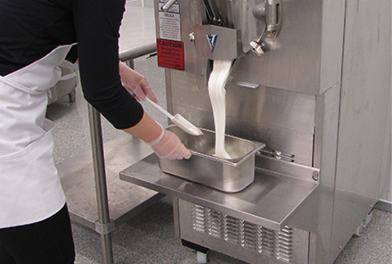

Ice Cream Making
The journey from cow to cone makes its final stop in our creamery. Our creamery features a viewing window into our processing room where the magic happens. If you come at the right time, you can watch us making your favorite flavor of hand-crafted ice cream right before your eyes.
The journey from cow to cone